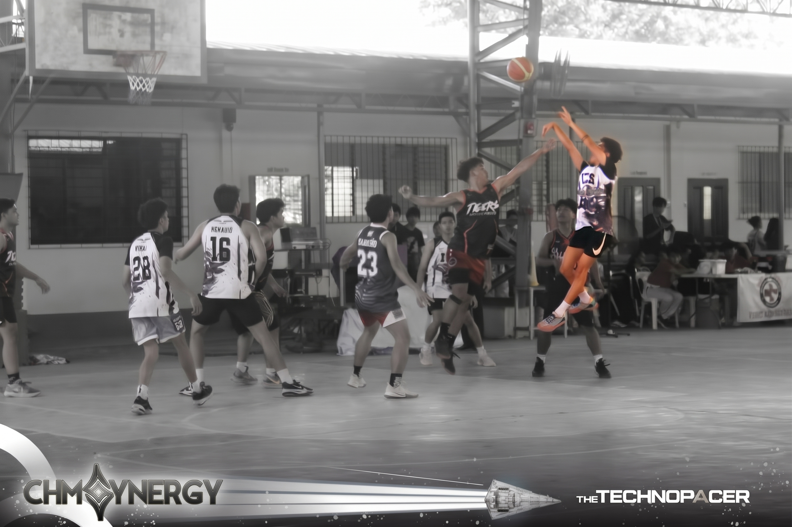

🏆 MVP SPOTLIGHT
BASKETBALL
Basketball Intramurals MVP
Arron R. Sartorio
BSIT 2A
Recognized for outstanding scoring, court awareness, and leadership throughout the campus basketball intramurals.
Achievement Highlights
20 PPGPoints per game
6 RPGRebounds per game
4 APGAssists per game
Arron earned the MVP recognition through consistent scoring, smart passing, and the ability to motivate teammates during close games. His all-around performance helped his team remain competitive throughout the tournament.